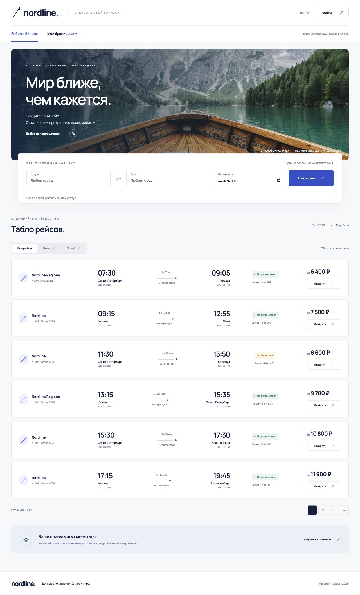
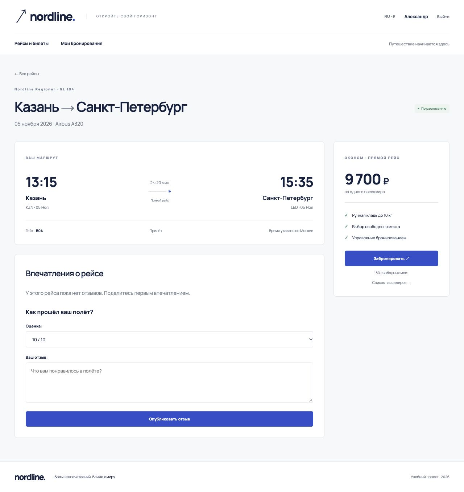
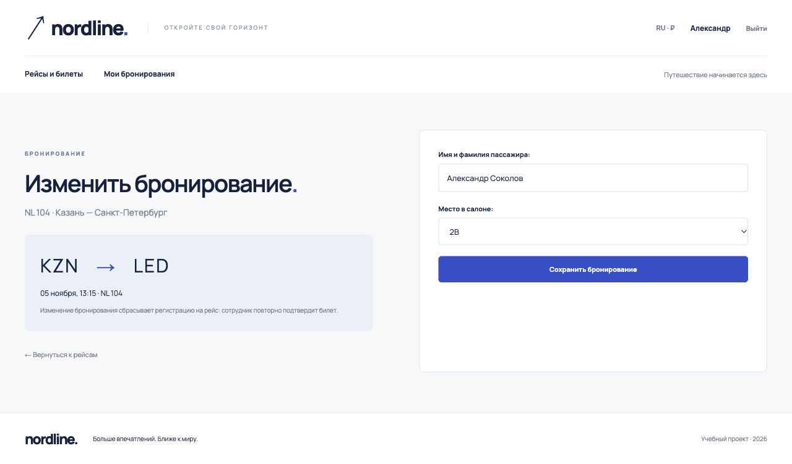
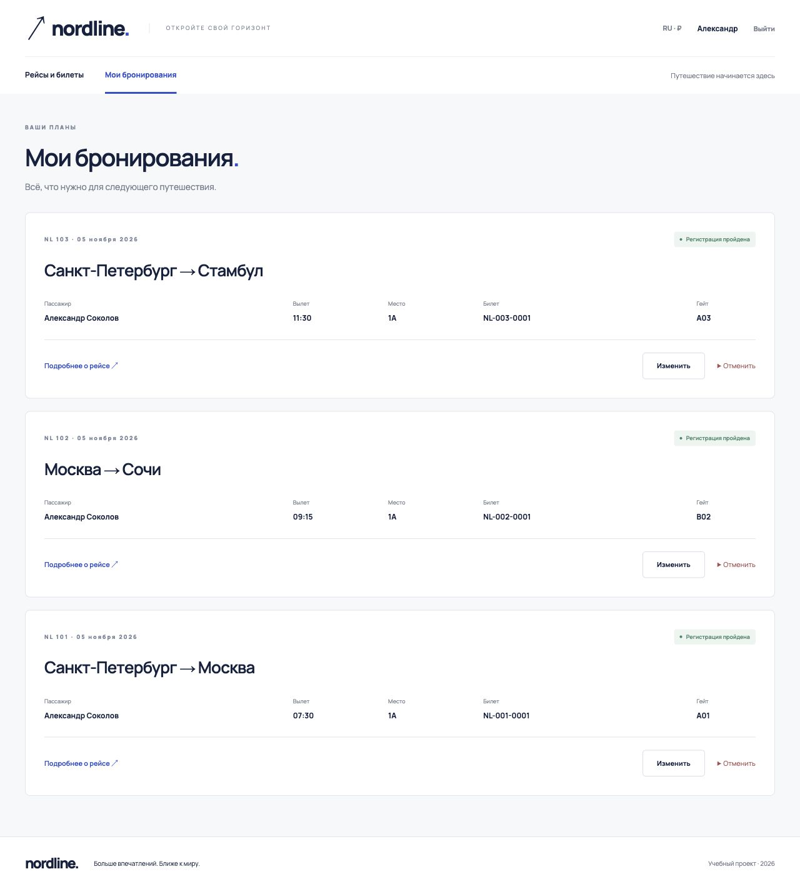
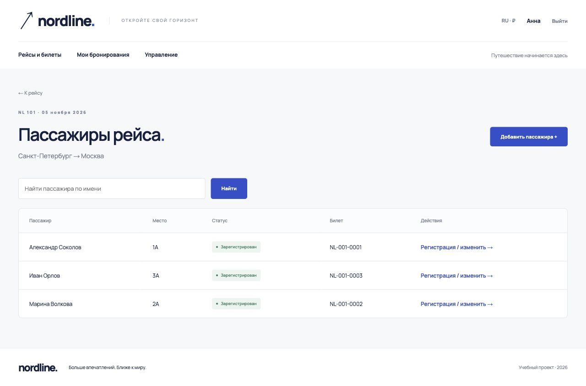
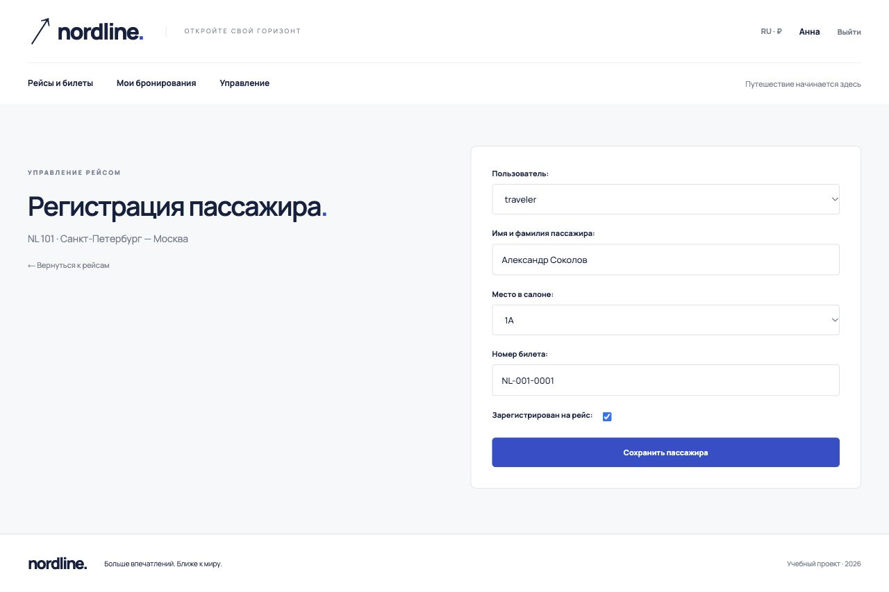
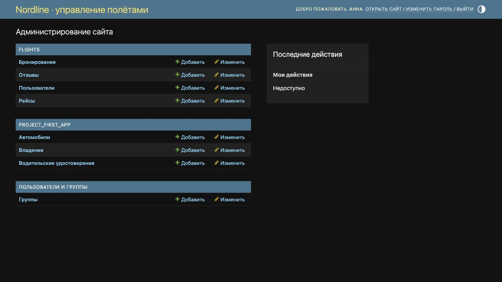
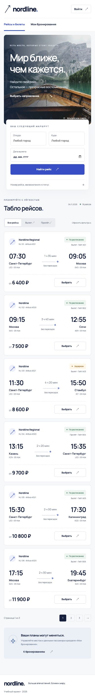

ЛР2. Табло авиаперелётов
Студент: Беляева Валерия Андреевна. Группа: K3339. Вариант: 3.
1. Цель и задание
Разработать сайт средствами Django и PostgreSQL с серверной генерацией страниц. Вариант 3 предполагает хранение рейсов, бронирование мест, регистрацию пассажиров сотрудником, таблицу пассажиров и отзывы.
Рейс содержит номер, авиакомпанию, отправление, прибытие, тип «вылет/прилёт» и гейт. Пользователь регистрируется на сайте, выбирает место, изменяет или удаляет своё бронирование и оставляет отзыв. Сотрудник указывает билет и регистрирует пассажира на рейс.
2. Средства разработки
- Python 3.14; Django 5.2.19 LTS.
- PostgreSQL 16.14; psycopg 3.3.8.
- Jinja2 3.1.6 для интерфейса, Django Templates для встроенной админ-панели и виджетов форм.
- HTML, CSS, адаптивная сетка без клиентского фреймворка.
- MkDocs Material для отчёта.
Вместо устаревшего Django 3 из вводного описания использована LTS-ветка 5.2, совместимая с установленным Python. Архитектура и требуемые возможности сохранены.
3. Дизайн
Визуальный ориентир — сайт Finnair: светлая палитра, тёмная типографика, синий акцент, крупная форма поиска и навигация между поиском и управлением бронированием. В проекте используется собственное название Nordline, собственная вёрстка и локальная фотография альпийского озера. Логотип и исходный код Finnair не используются.
Карточка рейса группирует авиакомпанию, маршрут и время, статус, цену и переход к бронированию. На телефоне блоки перестраиваются вертикально; проверена ширина 390 px, горизонтального переполнения главной страницы нет.

4. Архитектура
Поток обработки запроса: URL → view → форма/ORM → PostgreSQL → Jinja2 → HTML.
| Компонент | Файлы | Назначение |
|---|---|---|
| Конфигурация | django_project_belyaeva/settings.py, urls.py, jinja2.py |
PostgreSQL, маршрутизация, шаблоны |
| Данные | flights/models.py, migrations/0001_initial.py |
Рейсы, пользователи, бронирования, отзывы |
| Проверка ввода | flights/forms.py |
Регистрация, фильтры, место, отзыв, регистрация пассажира |
| Логика | flights/views.py |
Поиск, CRUD бронирований, отзывы, права доступа |
| Интерфейс | templates/, static/css/style.css |
Страницы и адаптивные стили |
| Администрирование | flights/admin.py |
Управление рейсами и пассажирами |
| Начальные данные | flights/management/commands/seed_demo.py |
Демонстрационные рейсы и учётные записи |
5. Модель данных
erDiagram
User ||--o{ Booking : reserves
Flight ||--o{ Booking : contains
User ||--o{ Review : writes
Flight ||--o{ Review : receives
User {
bigint id PK
string username UK
string first_name
string last_name
string email
boolean is_staff
}
Flight {
bigint id PK
string number
string airline
string origin
string origin_code
string destination
string destination_code
datetime departure_at
datetime arrival_at
string kind
string gate
string status
integer capacity
integer price
}
Booking {
bigint id PK
bigint user_id FK
bigint flight_id FK
string passenger_name
string seat
string ticket_number
boolean checked_in
datetime created_at
}
Review {
bigint id PK
bigint user_id FK
bigint flight_id FK
date flight_date
text text
integer rating
datetime created_at
}| Сущность | Ключевые ограничения |
|---|---|
| Flight | Уникальна пара номера и времени вылета; прилёт позже вылета |
| Booking | Одно место — одно бронирование на рейсе; одно бронирование пользователя на рейс |
| Booking | Место должно существовать в салоне; подтверждение регистрации требует номера билета |
| Review | Оценка от 1 до 10; автор определяется текущим пользователем, дата — временем выбранного рейса |
Бронирование — связь между пользователем и рейсом с собственными атрибутами места, имени пассажира и билета. Поле checked_in отделяет бронирование от завершённой регистрации на рейс.
6. Поиск и табло
Главная страница / показывает шесть рейсов на странице. Фильтры: отправление и назначение (город либо код аэропорта), дата вылета, номер рейса/авиакомпания, тип и статус. Фильтрация выполняется в PostgreSQL через ORM, а не скрытием элементов на клиенте. Пагинация сохраняет выбранные фильтры.
Для поиска нескольких полей используются Q, например номер рейса или авиакомпания. Пустая выдача содержит ссылку сброса фильтров. Неверная дата возвращает ошибки формы.
7. Страница рейса и отзывы
/flights/<id>/ показывает маршрут, длительность, гейт, свободные места, цену, отзывы и форму публикации отзыва. Время отображается в часовом поясе Москвы; это явно подписано.
Авторизованный пользователь отправляет оценку и текст. Сервер устанавливает автора и дату рейса. После сохранения выполняется redirect, поэтому обновление страницы не повторяет отправку.

8. Регистрация и бронирования
На /signup/ используется UserCreationForm: пароли проверяются стандартными валидаторами Django и сохраняются в виде хеша. Вход — через LoginView, выход — POST-запросом.
Выбор места выполняется через BookingForm. Список содержит только свободные места салона. Создание, изменение и отмена брони доступны авторизованному пользователю; изменение и удаление ищут запись одновременно по идентификатору и владельцу. Изменение данных пассажира или места сбрасывает регистрацию и билет, чтобы сотрудник подтвердил их заново.
Сохранение выполняется в транзакции; уникальность места проверяется также ограничением PostgreSQL. Если другой пассажир занял место между показом формы и отправкой, форма предлагает выбрать другое место.

На /bookings/ отображаются собственные бронирования: пассажир, место, рейс, время, гейт и билет. Отмена требует подтверждения и POST-запроса с CSRF-токеном.

9. Таблица пассажиров и права сотрудника
/flights/<id>/passengers/ отображает пассажиров рейса с поиском по имени и пагинацией по десять записей. Для пользователя доступны имя, место и статус. Сотрудник дополнительно видит номер билета, добавление и изменение пассажира.

Представление staff_booking проверяет is_staff на сервере. Оно позволяет выбрать пользователя, указать пассажира, место и билет, поставить отметку регистрации. Скрытие кнопки в шаблоне не заменяет эту серверную проверку.

Та же операция доступна в Django Admin. В админ-панели зарегистрированы все модели, есть фильтры и поиск.

10. Основные маршруты
| Метод | Адрес | Операция |
|---|---|---|
| GET | / |
Поиск, фильтрация, пагинация |
| GET, POST | /signup/, /login/ |
Регистрация и вход |
| POST | /logout/ |
Выход |
| GET, POST | /flights/<id>/ |
Рейс и публикация отзыва |
| GET, POST | /flights/<id>/book/ |
Бронирование |
| GET | /bookings/ |
Мои бронирования |
| GET, POST | /bookings/<id>/edit/ |
Изменение собственной брони |
| POST | /bookings/<id>/delete/ |
Отмена собственной брони |
| GET | /flights/<id>/passengers/ |
Пассажиры рейса |
| GET, POST | /flights/<id>/passengers/add/ |
Добавление сотрудником |
| GET, POST | /flights/<id>/passengers/<booking_id>/ |
Регистрация сотрудником |
| GET, POST | /admin/ |
Django Admin |
| GET, POST | /practice/… |
Практики 2.1–2.3 |
11. Запуск и проверка
На macOS — start.command. Подробный ручной запуск и параметры подключения описаны в README проекта. Демонстрационные данные: 18 рейсов, девять бронирований, шесть пользователей и семь автомобилей. Доступы генерируются локально; в исходный код и отчёт пароли не включаются.
Проверено:
- миграции PostgreSQL и
manage.py check; - отсутствие неприменённых изменений моделей;
- регистрация пользователя, создание/изменение/отмена брони и публикация отзыва;
- недоступность чужого бронирования и операций сотрудника обычному пользователю;
- сохранение билета и регистрации сотрудником; ошибка при регистрации без билета;
- формы владельцев и CRUD автомобилей;
- работа основных страниц, поиск, пагинация;
- визуальная проверка страниц в браузере и главной страницы при ширине 390 px.

12. Вывод
Реализовано серверное приложение с хранением данных в PostgreSQL, разделением прав и шаблонами Jinja2. Основная логика сосредоточена в моделях, формах и представлениях Django; HTML отвечает за представление, CSS — за адаптивный интерфейс. Практики 2.1–2.3 выполнены в отдельном приложении и описаны в соседнем отчёте.